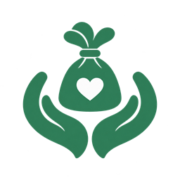

Administração geral
Solicitações
Analise pedidos de cadastro e de acesso institucional.
Tente novamente quando o serviço estiver disponível.
Não há pedidos para o filtro selecionado.
| Instituição | Responsável | Tipo | Data | Status | Ação |
|---|

Bem-FeitoAnalise pedidos de cadastro e de acesso institucional.
Tente novamente quando o serviço estiver disponível.
Não há pedidos para o filtro selecionado.
| Instituição | Responsável | Tipo | Data | Status | Ação |
|---|